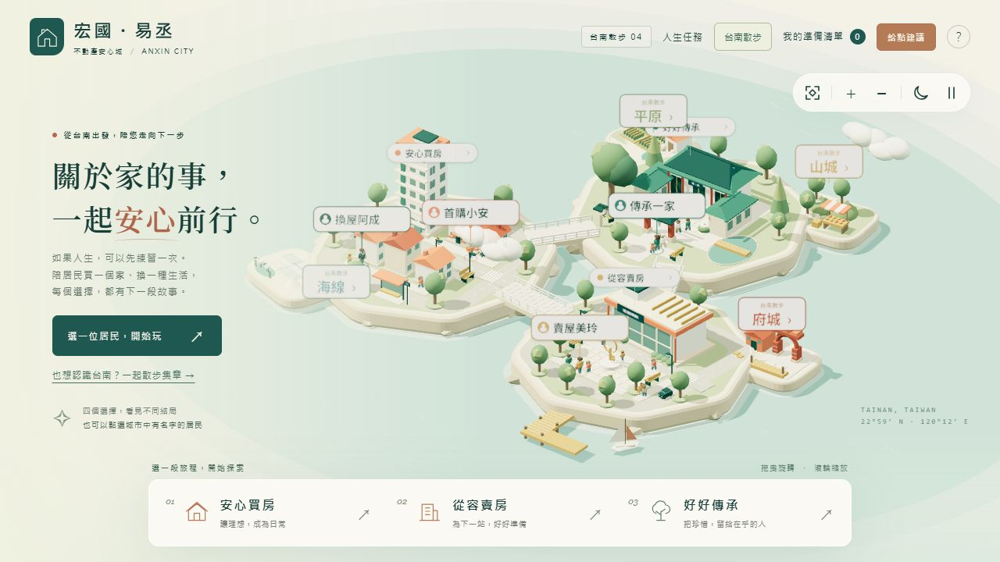

交易與登記
買賣、贈與、產權檢核、契約與履約風險。
從簽約前的產權與價金風險，到登記、稅務、貸款、建商交屋、土地整合與資產傳承，協助您釐清條件、掌握流程，再決定下一步。
使用清晰的大字清單快速查看常見應備文件，實際仍以案件條件及承辦通知為準。
不是只完成登記，而是把契約、稅務、貸款與執行時程一起檢查。
買賣、贈與、產權檢核、契約與履約風險。
房地合一稅、土地增值稅、貸款與實拿分析。
共有土地整合、分坪表、保存登記與交屋專案。
繼承、贈與、資產控制與家族傳承安排。
初步試算不能取代銀行核貸、稅額核定或正式專業意見，請依個案資料複核。

選一段首購、換屋、賣屋或傳承故事，練習做選擇、看懂預算與政策；也能散步認識台南。
情境供學習與練習，實際貸款、稅務及交易條件仍須依個案確認。
建案整批登記、共有土地整合或家族傳承，都先確認目標、文件與關鍵限制。
說明案件類型、所在地與方便聯繫時間。
由專人判斷需求，安排合適顧問與可申請時段。
完成費用說明、匯款與人工核對。
確認後建立 Google 行事曆並通知雙方。